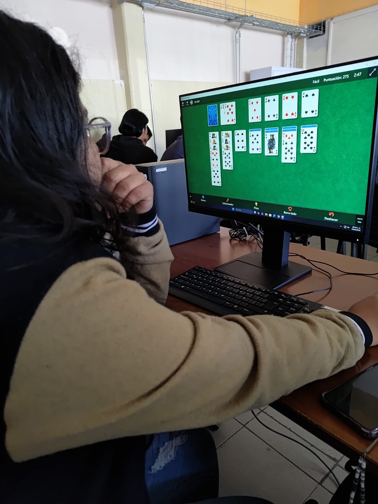

Datos Personales
- Nombre completo: Joselyn Gómez Cortés
- Fecha de Nacimiento: 12/07/2004
- Lugar de Nacimiento: Orizaba, Veracruz, México
Soy estudiante de Sistemas Computacionales y me apasiona aprender sobre programación y tecnología. Mi color favorito es el morado, disfruto mucho ver series y películas, y soy fan del grupo de música Stray Kids. También me gusta dibujar en mis tiempos libres y compartir momentos con mis dos perritos, Max y Cookie, que siempre me acompañan.

Mis Redes Sociales
¡Descarga mi CV!
Descargar CV en PDF